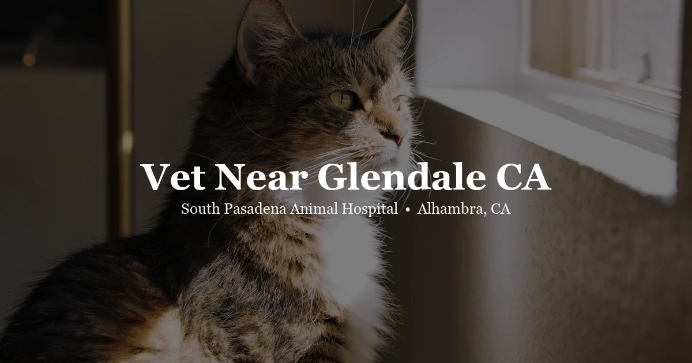

May 4, 2026 · 6 min read
Vet Near Glendale, CA: Dogs, Cats, and Exotic Pets at South Pasadena Animal Hospital

Glendale has no shortage of veterinary options — but if you've got a rabbit, a parrot, a bearded dragon, or any pet that isn't a dog or a cat, you've probably already discovered that "nearby" doesn't always mean "equipped to help." And even for dogs and cats, quality and consistency vary a lot. We get calls from Glendale pet owners fairly regularly, asking whether the drive to our clinic in Alhambra is worth it.
Honest answer: it depends on what you're looking for. We're at 3116 W Main St in Alhambra, about 18–22 minutes from central Glendale via I-5 S or I-134 W to I-210 E. We see dogs and cats for full-service routine and medical care, and we're one of the few SGV clinics that handles exotic animals — rabbits, birds, reptiles, guinea pigs, and more. If that's what you need, the drive is worth it. Let's walk through what we offer.
Getting here from Glendale
From downtown Glendale near Brand Boulevard, the fastest route is I-5 S toward Los Angeles, then east on Valley Boulevard into Alhambra — or take I-134 W to I-210 E and exit at Huntington Drive, which feeds directly into the Main Street corridor where we're located. Either route runs about 18–22 minutes in regular traffic. Plan for more time during the afternoon commute.
Parking is free, right in front of the clinic. No garage, no meters. Pull in, check in, done.
Dogs and cats — what we actually do
We handle the full scope of care for dogs and cats. Annual wellness exams, vaccine protocols, bloodwork, diagnostics, dental cleanings, skin and ear conditions, soft tissue surgery, gastrointestinal problems, chronic disease management — that's the everyday. If something suddenly seems wrong with your dog or cat, we handle urgent same-day visits when space allows.
We don't run a one-size-fits-all vaccine schedule — an indoor cat who hasn't seen the outdoors in five years carries different risk than a dog who socializes at Griffith Park every weekend, and we tailor recommendations to match. Dental disease gets real attention here too: by five or six, most dogs and cats already have dental discomfort that owners haven't noticed, simply because pets don't vocalize tooth pain the way they would a sore paw. We check at every wellness exam. And pricing stays transparent — our pricing page lists exam fees for dogs, cats, and exotics up front, no surprise numbers waiting at checkout.
Exotic animals from Glendale
This is where a lot of Glendale pet owners end up calling us. Glendale has a large, diverse pet-owning population — including plenty of households with birds, rabbits, reptiles, and small mammals. Finding a clinic that sees those animals well is genuinely difficult in the LA area.
Rabbits make up a good share of what we see — annual wellness exams, dental disease, GI stasis that can turn fatal within 24 to 48 hours if it's missed, and spay/neuter procedures. A lot of owners don't realize how quickly some of these escalate. Birds are prey animals by instinct, which means they hide illness until they physically can't anymore — by the time a parrot or cockatiel looks obviously sick, the decline has often been going on for days. Reptiles, in our experience, almost always trace their health problems back to husbandry — a temperature gradient that's off, a UV lighting gap, a diet issue — and we can help troubleshoot the setup alongside treating whatever's developed. Guinea pigs and chinchillas hide dental disease especially well; weight loss and less interest in food are usually the first signs an owner notices, and by then it's often already significant. And small mammals like hamsters bring their own list — tumors, respiratory illness, dental overgrowth, wet tail — because small size never means small medical needs.
If you're not sure whether we can see your specific animal, just call: (626) 441-1314. We'll give you a direct yes or no.
Why exotic animal care is harder to find than it should be
Most general practice vet clinics don't see exotics, or they accept them rarely enough that the experience isn't deep. It's not a criticism — it's just a matter of what a practice focuses on day to day. Exotic animals have completely different anatomy, physiology, and medication tolerances from dogs and cats. A rabbit that gets a dog dose of certain common medications can die from it. A bird showing subtle behavioral changes might be in early respiratory distress. These are things you want a team that sees these animals all the time, not occasionally.
We see exotic patients consistently, and our approach to their care reflects that. If you've been driving farther than you'd like to get your rabbit or bird or reptile seen properly, we're worth looking into.
Senior pet care — when age changes everything
Glendale has a lot of long-term pet owners, and we see older dogs and cats that have been family members for a decade or more. Senior care is genuinely different from routine adult wellness. Conditions like hyperthyroidism, chronic kidney disease, dental disease, arthritis, and hypertension all become more common after age seven or eight — and many of them are manageable when caught early.
We recommend twice-yearly exams for senior pets (generally defined as dogs and cats over seven, though large breed dogs are considered senior younger). More frequent bloodwork, blood pressure checks, and weight monitoring catch problems in the window where intervention is most effective. If your dog or cat is getting older and you haven't updated their care routine to match, come in. We can walk you through what to monitor and when.
Vaccinations for Glendale dogs and cats
California law requires rabies vaccination for both dogs and cats. For dogs, DA2PP covers the core risks: distemper, adenovirus, parvovirus, and parainfluenza. Bordetella is worth adding if your dog boards, grooms, or frequents dog parks. For cats, FVRCP (feline viral rhinotracheitis, calicivirus, panleukopenia) is the standard core vaccine alongside rabies.
We don't push vaccines that aren't appropriate for your animal's actual exposure risk. If your indoor cat has been vaccinated consistently for years and never goes outside, we'll have a conversation about what actually makes sense — not just run through a checkbox list.
Questions from Glendale pet owners
Is there an animal hospital near Glendale, CA?
South Pasadena Animal Hospital is at 3116 W Main St in Alhambra — about 20 minutes from central Glendale. We offer full-service care for dogs, cats, and exotic animals. Call (626) 441-1314 or visit our contact page.
Does South Pasadena Animal Hospital see exotic pets?
Yes. We regularly see rabbits, birds, reptiles, guinea pigs, chinchillas, and hamsters from across the LA area including Glendale. Call (626) 441-1314 to confirm we can see your specific animal.
How long is the drive from Glendale to SPAH?
From central Glendale near Brand Boulevard, plan for about 18–22 minutes via I-5 S or I-134 W to I-210 E. Traffic on I-5 can add time during peak hours, but the drive is manageable.
Does SPAH post its exam prices?
Yes — our pricing page lists exam fees for dogs, cats, and exotic animals so you know what to expect before you arrive. We don't believe in hiding pricing from pet owners.
Does SPAH do dental cleanings?
Yes. Professional dental cleanings under general anesthesia for dogs and cats, with pre-anesthetic bloodwork included. We also assess dental health at every wellness exam. Book online or call (626) 441-1314.